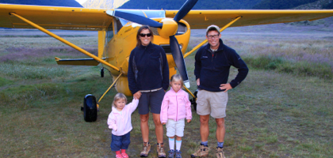
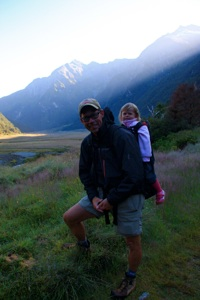
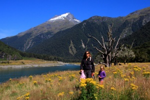
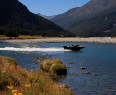

Makarora - Siberia Valley

Den gule flyver
tirsdag den 5. februar 2008

Vi tager afsted fra Wanaka, efter at Stella har været på legeplads i 2 timer, mens Viola og jeg har kigget efter fødselsdagsgaver til Tim.
Vi kører mod Makarora, hvor vi skal overnatte. Campingpladsen er ret lille, og ligger fint mellem bjergene lige ved får og heste. Der er en butik, en cafe, en bar og en campingplads, det er det hele. Da vi kommer ind i baren, er den fyldt med amerikanere på cykeltur. De har spurtet for at kunne nå at se afslutningen på Superbowl.
Tirsdag : Vi skal meget tidligt op : kl. 6.45 for vi skal på eventyr. Pigerne er ikke lette at få op, men da vi har fået lidt varme på bilen hjælper det. Vi skal hente badesko, og så skal vi flyve med et lille gult Cesna fly op til Siberia Valley, en National park i bjergene, hvor vi bliver efterladt, og så skal vandre nogle timer ned til en flod, hvor vi bliver afhentet af en jetbåd.

Den lille flyver ser noget gammel ud, og vores pilot virker MEGET afslappet, men hen ad græsplænen går det og så er vi i luften. Det er en smuk morgen med skyfri himmel. Vi glider langs dalene, mellem sneklædte bjerge, mens vi kigger på gletsjersøer, og vandfald.
Efter ca. 25 minutters flyvning, bliver vi sat af i en dal - Siberia Valley. Vi troede egentlig at det var en guidet tur, men nej, over floden, og så følg stien til I møder nogle væltede træstammer, det tager nok ca. 3 timer! Der står vi så, med to børn, og en kold morgen med frost i luften. Af med vandrestøvlerne, på med vandsko, børnene på armen, og så ned i det 4-5 grader kolde smeltevand i den rivende flod. Efter lidt tid kan man ikke mærke tæerne mere, så det er meget godt...
Vi vandrer afsted helt alene i verden, uden telefon, kort eller anden mulighed for at komme i kontakt med omverdenen. Efter lidt tid finder vi ud af, at Stella er meget kold, hun sidder jo stille på ryggen, og har ikke haft mulighed for at gå sig varm. Amatørerne har ikke noget varmt med at drikke, kun koldt vand. Stella får lange uldunderhylere på, og så må vi ellers bære afsted med hende på armen, indtil hun er blevet varm. Turen er kuperet og den går gennem regnskov med en masse små vandløb.

Efter ca. 3 timers vandring, og en del søgen, finder vi opsamlingsstedet for vores båd. Vi er midt i en solfyldt dal med masser af blomster, lidt sandfluer, og en forrygende udsigt - tænk at vi får lov til at være her helt alene. Vi når lige at blive lidt nervøse før jetbåden, en halv time forsinket kommer for at samle os op.

Efter hjemkomst, en kold øl til os og varm kakao til pigerne, kører vi mod Fox og Franz Josef gletsjerne på vestkysten. På campingpladsen møder pigerne straks nogle danskere, så der er dømt masser af leg, selvom de burde falde om af træthed.
I morgen venter 2 nye vandreture....
/Camilla
Her står vi foran vores lille gule flyver. Kl. er 8.30, og der er frost i græsset. Vi er rigtig klædt på til turen......